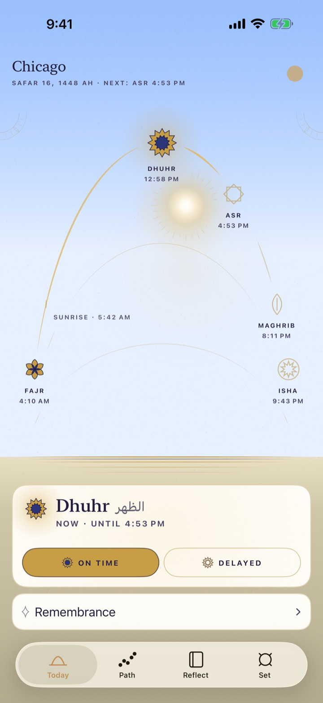
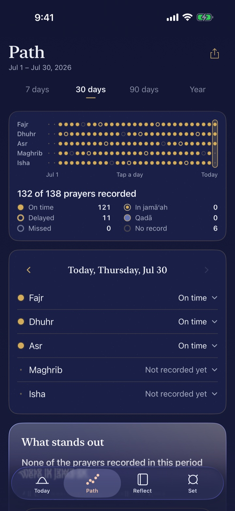
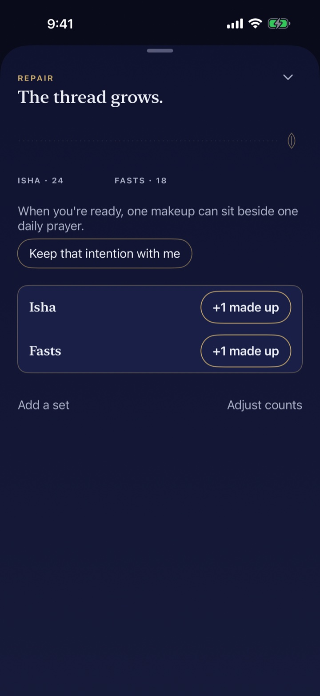
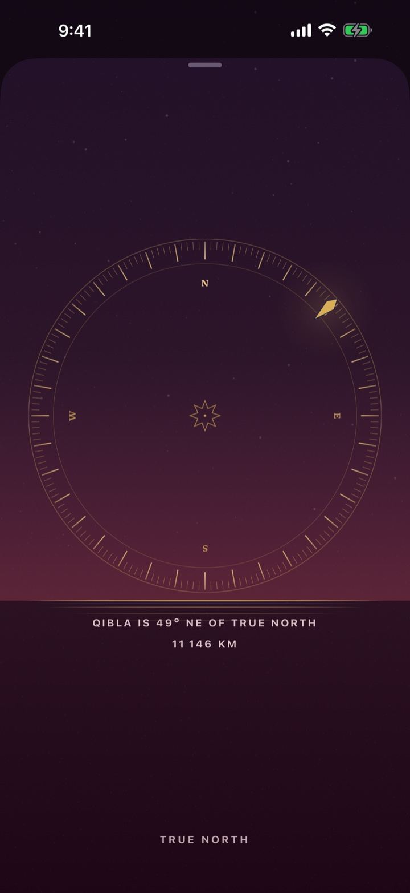

-

One tap records a prayer in its window.
One more takes it back. Mark it on time or delayed, alone or in jamāʿah, from the app, a widget, your watch, or Siri.
-

A month of prayer at a glance.
Every day is a column and every prayer a dot. Tap any day to read it or correct it. There are no streaks and no score.
-

A ledger for what you carry.
Count the prayers and fasts you owe, then make them up beside your daily prayers at a pace you set yourself.
-

The direction, drawn rather than pointed at.
A compass that holds true north and marks the qibla on its rim, with the distance to Makkah beneath it.
Also in the app
- Widgets and Live Activities
- The arc on your Home Screen, Lock Screen and StandBy, and the current prayer in the Dynamic Island.
- Apple Watch
- Times, qibla and one-tap logging on your wrist, with complications for the next prayer.
- Reflections
- Write or speak a few lines after a prayer. Voice notes are transcribed on your phone.
- Remembrance
- Morning and evening adhkār, a tasbīḥ counter, and duas for the weather outside your window.
- Masjids nearby
- Find one close to you and keep its jamāʿah times next to your own.
- Fasting, pause and travel
- A log for your fasts, and Pause and Travel modes that set a stretch of days apart. Ihsan does not ask why.
What you record stays yours.
Ihsan has no account, no analytics and no server of its own. Your prayer log lives on your devices and in your private iCloud, where only you can read it. Your location is used in the moment to work out times and direction, and is never written down.
The app makes four kinds of network request. This is all of them.
- A city name. Apple turns your position into “Chicago” so the app can show it.
- Masjids nearby. An Apple Maps search, only while that sheet is open.
- The weather. A reading from Apple, only if you use the living sky or the weather duas.
- Prayer thresholds. A small settings file from our public GitHub repository. The same file ships inside the app.
None of them carries anything that identifies you. This page loads no fonts, scripts or trackers from anyone else, either.